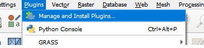
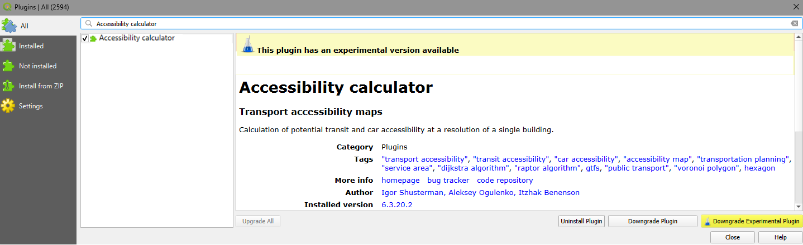

2. Installation
To use the Accessibility Calculator, you must first have QGIS installed on your PC (for downloads and documentation, see https://qgis.org). Navigate to the Plugins → Manage and Install Plugins menu (Figure 1).

Figure 1: Accessibility Calculator installation
Select the All tab, type “Accessibility Calculator” into the search bar, and click Install Plugin (Figure 2).

Figure 2: Accessibility Calculator plugin installation
Once the process is complete, a new button and menu item will automatically be added to your QGIS toolbar panel and plugins menu.
Note
To be able to download experimental versions of the CA-plugin enable this option, see https://docs.qgis.org/3.44/en/docs/training_manual/qgis_plugins/fetching_plugins.html